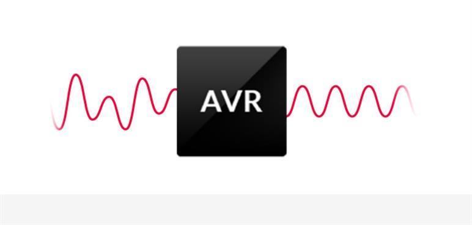
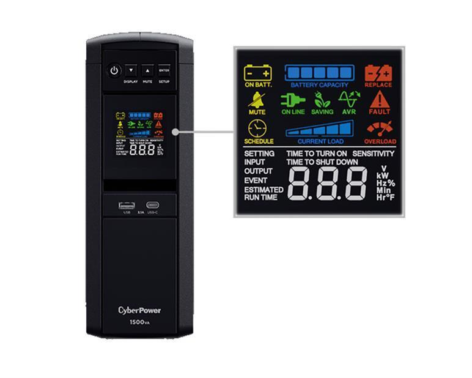
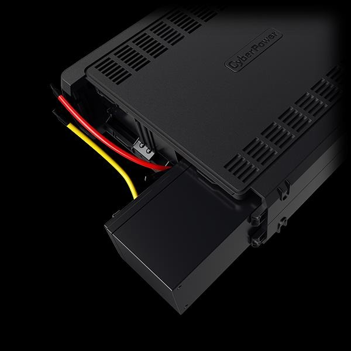
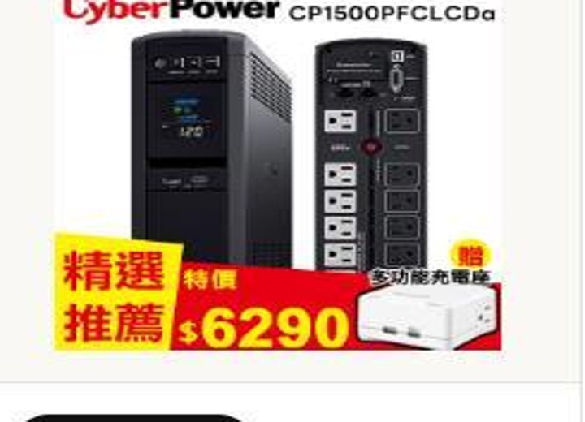
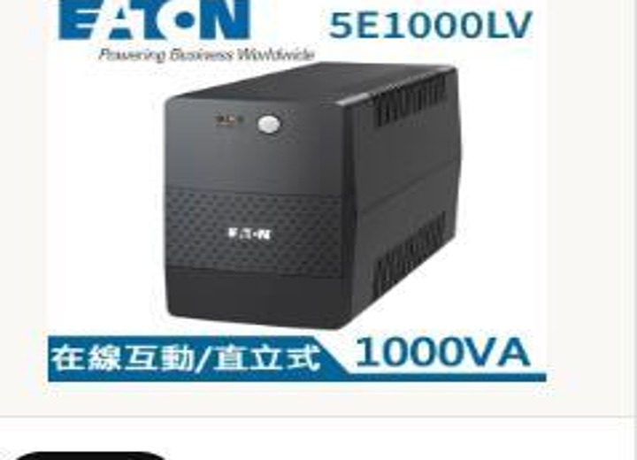
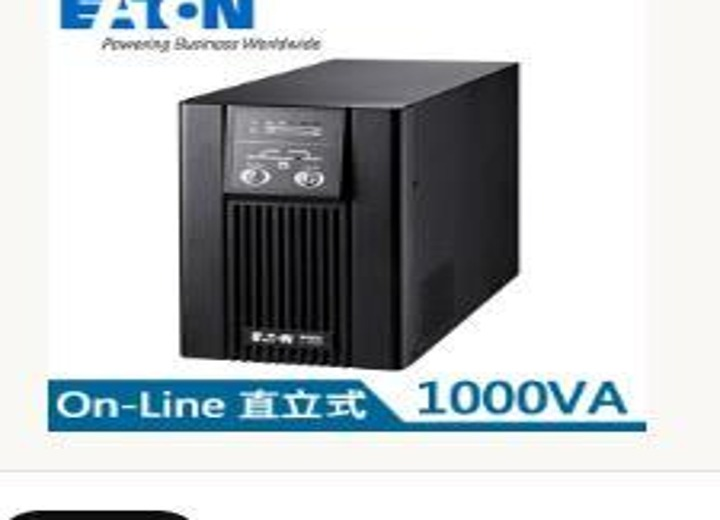

停電 5 分鐘就可能毀掉整台 NAS？UPS 怎麼選、能撐多久一次看懂
UPS 不是買來讓你撐一整天，而是幫電腦、NAS、伺服器和網路設備爭取最關鍵的 5 到 30 分鐘。這段時間足夠你存檔、關機，或讓設備自動安全停機。
先講結論：UPS 買來不是讓你撐一整天
一般家用與辦公室 UPS 的核心任務，不是停電後讓你繼續工作一整天，而是爭取 5 到 30 分鐘的黃金時間。這段時間可以讓你存檔、關機，讓 NAS 停止寫入資料，或讓伺服器、監控主機依照設定自動安全關機。
換句話說，UPS 的價值不是「電池有多大」而已，而是它能不能避免硬斷電、能不能穩定輸出、能不能和你的設備搭配。對一般電腦來說，它救的是正在處理的檔案；對 NAS 和伺服器來說，它救的是硬碟、檔案系統和資料完整性；對監控或網路設備來說，它救的是停電當下仍要持續運作的服務。
電腦 / 工作站
重點是避免瞬斷、存檔與安全關機，建議保留容量餘裕。
NAS / 伺服器
重點是純正弦波、USB 通訊、自動關機與穩定供電。
網路 / 監控
耗電較低，搭配合適容量可以撐比較久，維持連線與錄影。
備援時間怎麼算？先看 W，不要只看 VA
UPS 規格常看到 1000VA、1500VA，但挑選時不能只看 VA。比較接近設備實際耗電的是 W，也就是瓦數。舉例來說，有些 1000VA UPS 可承載 600W，有些可承載 800W；如果你接的設備總耗電已經接近 UPS 的 W 上限，備援時間會很短，也更容易過載。
假設路由器 12W、光纖數據機 10W、NAS 約 35W，總耗電約 57W。如果 UPS 可用電池能量約 100Wh，轉換效率抓 80%，大約可撐 100 × 0.8 ÷ 57 = 1.4 小時。這就是為什麼低耗電網路設備接 UPS，常常可以撐比較久。
但如果換成桌機 300W、螢幕 30W，總耗電 330W，同樣的電池能量可能只剩十幾分鐘。若是工作站、伺服器、電競主機、外接硬碟很多的 NAS，負載更高，備援時間還會再縮短。實務上建議設備總瓦數不要貼著 UPS 上限跑，最好保留 20% 到 30% 空間。
最常見的痛點：不是大停電，而是小瞬斷
第一個痛點是瞬間跳電。很多辦公室不是每天大停電，而是偶爾閃一下、跳一下。人可能只覺得燈閃一下，但桌機已經重開，NAS 還在寫入資料，監控主機正在錄影。這種「看起來很小」的瞬斷，對資料反而很麻煩。
第二個痛點是電壓不穩。冷氣、冰箱、馬達或大型設備啟動時，電壓可能瞬間下陷；雷雨天或線路狀況不好時，也可能出現突波。在線互動式 UPS 常搭配 AVR 自動穩壓，能減少設備長期承受電壓波動。

AVR 自動穩壓
AVR 自動穩壓可降低電壓波動對設備造成的影響。對家用電腦、門市收銀、辦公室網路設備和 NAS 來說，這類保護通常比單純延長幾分鐘備援時間更有感。
離線式、在線互動式、在線式差在哪？
離線式
價格通常較親民，平常走市電，停電時切到電池，適合低負載、低風險設備。
在線互動式
多了穩壓能力，是家用電腦、網路設備、NAS、小辦公室最常見的選擇。
在線式
平常就透過整流、逆變處理電力，輸出更穩，適合伺服器與關鍵設備。
如果你的電力環境容易忽高忽低，或設備需要較穩的輸出，在線互動式會比單純離線式更安心。若是小型伺服器、關鍵工作站、通訊設備、醫療或工控周邊等比較不能閃一下就重開的場景，則可以評估在線式 UPS。
家用與一般辦公環境，最常見的甜蜜點通常是在線互動式 UPS。它的價格不會像在線式那麼高，又能處理常見的電壓偏高、偏低問題。若只是家用路由器、一般電腦，未必一開始就要衝在線式；但如果是伺服器、關鍵監控、營業設備或重要工作站，在線式就有它的價值。
純正弦波、LCD、可換電池，哪些規格值得看？
純正弦波
純正弦波比較接近市電波形，相容性通常更好，也比較不容易遇到切換後重開、異音或保護觸發。
LCD 顯示
LCD 顯示可快速查看負載、電池容量、輸入輸出與運作狀態，現場排查更直覺。
可更換電池
可更換電池設計有助於延長 UPS 使用年限，後續維護也更方便。


哪些人最該裝 UPS？
NAS 使用者
避免寫入中斷造成檔案系統錯誤，建議搭配自動關機。
遠端工作者
簡報、剪片、程式開發做到一半斷電，損失的是時間。
門市與辦公室
POS、路由器、監控主機一停，現場作業就容易卡住。
創作者與玩家
高階電腦功耗較高，更要注意 W 數與純正弦波需求。
選購時請先列出會接到 UPS 的設備，估算總瓦數，再保留 20% 到 30% 餘裕。不要把雷射印表機、電暖器、電鍋這種高瞬間功耗設備接到 UPS 電池備援孔，否則很容易過載。UPS 是保護資訊設備，不是拿來撐所有家電。
安裝時也要注意插座配置。很多 UPS 會分成「電池備援＋突波保護」與「只做突波保護」兩種插孔，真正需要停電時繼續運作的設備，才接到電池備援孔。像 NAS、路由器、數據機、桌機主機、螢幕可以視需求接上；印表機、碎紙機、電暖器這類高瞬間功耗設備，通常不建議接在備援孔。
怎麼配比較實用？三種情境直接看
| 應用情境 | 建議重點 | 備援時間目標 |
|---|---|---|
| 一般桌機 + 螢幕 | 看 W 數是否足夠，建議保留容量餘裕；高階電腦優先選純正弦波。 | 5 到 15 分鐘，足夠存檔與關機。 |
| NAS + 路由器 + 數據機 | 選支援通訊管理的 UPS，讓 NAS 可自動安全關機；低耗電網路設備可延長連線時間。 | 15 到 60 分鐘，依設備耗電與 UPS 容量而定。 |
| 伺服器 / 工作站 / 監控主機 | 重視輸出穩定、純正弦波、管理功能與電池維護；重要場景可考慮在線式。 | 5 到 30 分鐘，重點是安全關機或等待發電復電。 |
買 UPS 前，先確認這 5 件事
- 設備總瓦數：把要接的設備加總，UPS 的 W 數不要剛好壓線。
- 備援目標：你是要 5 分鐘關機，還是希望網路設備撐 1 小時？
- 輸出波形：高階電腦、NAS、伺服器、工作站建議選純正弦波。
- 通訊管理：NAS 或伺服器最好支援 USB 或軟體管理，停電時可自動關機。
- 電池維護：UPS 電池是耗材，備援時間明顯變短就要檢查或更換。
良興推薦：三種 UPS 怎麼選？

CyberPower 1500VA
1500VA / 1000W，純正弦波、在線互動式，適合 NAS、工作站、網路設備與較吃電的桌機環境。想要容量留餘裕，優先看這台。
查看商品
Eaton 飛瑞 UPS 5E1000LV
1000VA 在線互動式 UPS，主打成本效益、內建電壓調節、冷啟動與過載保護，適合路由器、數據機、一般辦公電腦。
查看商品
Eaton 飛瑞 C1000F
1KVA / 800W 在線式 UPS，輸出具穩壓與濾除雜訊功能，適合小型 PC 伺服器、辦公室關鍵設備與重視供電品質的環境。
查看商品如果你是第一次買 UPS，可以用「設備重要性」來分配預算。只想保護網路不斷線，先看入門在線互動式；家裡有 NAS、工作站、雙螢幕或高階桌機，就把 W 數與純正弦波列入條件；如果是公司關鍵設備，像伺服器、監控主機、門市結帳系統，則要把穩定度、管理功能、維護便利性一起考慮。
FAQ：UPS 常見問題
Q1：UPS 可以接雷射印表機嗎？
通常不建議。雷射印表機啟動與加熱瞬間耗電很高，容易讓 UPS 過載。UPS 應優先留給電腦、NAS、網路設備、監控主機這類需要安全關機或持續運作的設備。
Q2：1000VA UPS 可以撐多久？
要看設備總瓦數。低耗電路由器、數據機、NAS 可能撐比較久；高耗電桌機或工作站可能只剩十幾分鐘。先算 W，再看原廠備援表最準。
Q3：NAS 一定要接 UPS 嗎？
強烈建議。NAS 最怕斷電時還在寫入資料，搭配支援 USB 通訊或自動關機的 UPS，可以大幅降低資料損毀風險。
Q4：純正弦波 UPS 有必要嗎？
如果是主動式 PFC 電源供應器、高階桌機、工作站或比較敏感的設備，純正弦波會更穩定。一般低功耗設備可依預算與需求選擇。
Q5：UPS 電池多久要換？
常見約 2 到 3 年開始衰退，實際壽命受溫度、放電次數與使用環境影響。若自我測試時間變短、異常警示或電池膨脹，就要盡快更換。